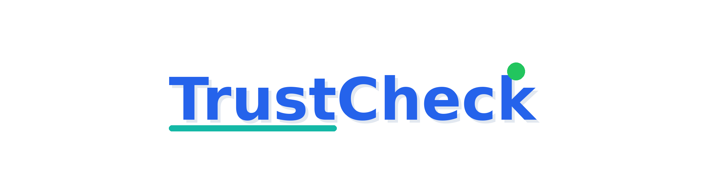

Brand Identity Guidelines
TrustCheck is a privacy-first content authenticity verification tool. Users upload images or videos to check if they're real or AI-generated. The brand communicates trust, verification, transparency, and modern technology.
Three logo variants plus a horizontal lockup provide flexibility across contexts — from app icons to hero banners.
A stylized "T" integrated with a circular gauge/shield element. Surrounding gauge arcs represent the Trust Meter — always showing measurable confidence. A green checkmark accent signals verified authenticity.
Use: App icon, favicon, avatar, navigation bar, small spaces.

"TrustCheck" in clean sans-serif — "Trust" grounded by a teal underline bar suggesting stability. Green dot indicator above the 'k' signals verification.
Use: Headers, loading screens, where horizontal space allows.
T-shield icon + "TrustCheck" wordmark + "Verify with confidence" tagline. The teal accent bar underlines the full brand name.
Use: Website hero, login screens, marketing materials, official documents.
A blue-primary palette with teal, green, and amber accents. Blue conveys trust and professionalism; teal adds a modern tech edge; green confirms verification; amber signals caution.
Primary Font: Inter, SF Pro Display, or system sans-serif
Secondary: Manrope (headings), system-ui (body)
Use standard colors on light backgrounds
Use inverted variants on dark backgrounds
Maintain clear space around the logo
Scale proportionally (lock aspect ratio)
Stretch or distort the logo
Change colors arbitrarily
Add shadows, effects, or outlines
Place on busy backgrounds without contrast
Rearrange or modify elements
GitHub Social Preview: 1280×640 — dark background with icon + wordmark + tagline
Full path: /root/spikes/trust-verify/trustcheck/
See BRAND_GUIDELINES.md for the complete asset inventory.